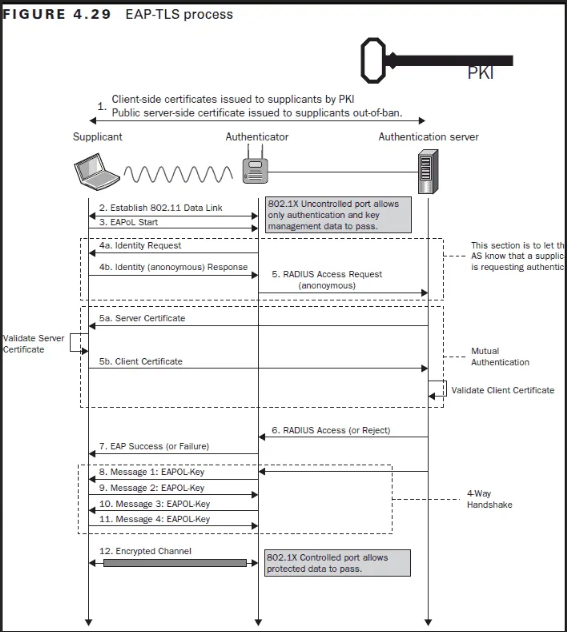
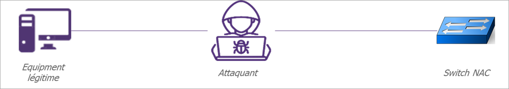

NAC
Table of content
802.1x
Mac Address ByPass (MAB)
These configuration is usually set as the default case for devices that do not support 802.1X authentication.
For example, a printer or VoIP phone hardly ever support certificate or password authentication.
When a the MAB is enabled on a switch port, it will drop every frame except the first one. This frame is used to collect the device MAC address.
Once the MAC is known, the switch contact the authentication Radius and to check if the MAC address is allowed to connect to the network.
By default the MAB only supports single device per switch port. Thus, if two different MAC addresses are detected on the same port, a security violation error is raised and the port is closed.
This behavior can be configured :
Single-host mode: Only onMACcan be authenticated at the same time on the same switch port.Multi-domain mode: One host per data domain (VLAN Voice/VLAN Data) is allowed to be authenticated. This is the default configuration for switchs withIPphones connected.Multi-host: The first-connected device will open the switch port and all other devices can use the port without being authenticated. This mode is considered as unsecured and must not be used.
EAP-TLS
EAP is an authentication protocol. It is usually mixed with another protocol.
The authentication packets are sent by the EAP protocol, but the authentication data are encapsulated in the EAP packet using another protocol such as TLS.
The EAP-TLS authentication is based on the certificate. The user is authenticated using a TLS certificate stored on its machine.
For example, on companies, usually, the ADCS ADCS generates a certificate and a GPO push it in the machine certificate store.
Thus, when the machine is connected to the network, it can be authenticated on the switch using the certificate provided by the GPO.
The following figure exposes the authentication requests performed during the EAP-TLS flow:

Standard network protection
DHCP request close the switch port
The switch can be configured to close the port when a DHCP request is sent.
Thus, during the audit, it is recommended to deactivate the Windows network interface used cause it is hardly possible to avoid Windows to perform unwanted requests.
Moreover, it is recommended to always use static IP.
DHCP snooping
The DHCP snooping is a switch configuration that allows the switch to listen the DHCP traffic and drop potentially malicious requests
Anti ARP spoofing
The name tell everything.
This protection mitigates ARP spoofing attacks.
Bypass NAC
MAB
MAC and IP usurpation
The easiest way to bypass MAB authentication is to spoof the MAC and the IP.
However, some NAC solution implements a profiling mechanism.
This mechanism collects some data from the equipment that could not be known by an attacker such as its DHCP identifier, its Serial number, etc. and use them to determine the profile of the equipment.
For example, when an VoIP equipment initializes an authentication, its DHCP identifier is sent to the RADIUS. The RADIUS verify that the furnished DHCP identifier match with the MAC address filled in.
If it doesn't the authentication is refused.
Thus, this profiling method is a security through obscurity mechanism that allows to slightly increase the MAB authentication security.
Hold my beer !
Some switches are misconfigured and do not close the port when the equipment is unplugged.
Thus, it is possible to unplug a legit equipment, spoof its MAC and IP and then connect it to the network.
Because the switch does not close the port, it will not ask for a reauthentication and the equipment will be allowed to access to the network.
Because the authenticate step has not been triggered, the RADIUS will not check for the new equipment profile.
EAP-TLS
Bridged interfaces
The client must send a certificate to authenticate himself. Thus, an attacker spoofing its MAC will not be able to finalize the authentication process.
The idea of this attack is to let the equipment to authenticate itself on the switch through a controlled machine.
Because the NAC does not authenticate the equipment itself but the switch port, it will accept packets coming from the attacker machine.
For that, the attacker must be set in man in the middle position and forward all packets from the legit equipment to the NAC switch.

Prerequis
- A
Linuxmachine - Two networks interfaces
- A machine allowed to access to the network
Steps
- Install the
bridge-utilspackage :sudo apt-get install bridge-utils -y - Bridge your two interfaces :
brctl addbr br0 # create the bridge brctl addif br0 eth1 # add eth1 to the bridge brctl addif br0 eth2 # add eth2 to the bridge # activate all interfaces ip l set eth1 up ip l set eth2 up ip l set br0 up - Configure the
Linuxkernel to forwardEAPrequests :echo 8 > /sys/class/net/br0/bridge/group_fwd_mask - Deactivate the firewall :
sudo ufw disable sudo iptables -I FORWARD -j ACCEPT ` - Give an
IPto thebr0interface (static orDHCP) - Connect the
NACswitch and the legit equipement to your network adaptaters.
It does not work This technique can failed due to several protections.
If the DHCP is configured to only gave address to domain computer, the br0 interface will not be able to retrieve the address.
Sometimes, NAC switch can be configured to reauthenticate users when a DHCP request is sent.
If the NAC is configured with the Single-host mode, the br0 MAC address must spoof the legit equipment address.
The DHCP snooping and anti ARP spoofing can forbid use of static IP, thus, the it will not be possible to give IP to the br0 interface.
MAC and IP NAT
In order to bypass restriction on IP attribution on the br0 interface it is possible to use NAT IP and NAT MAC. All the traffic can be natted to simulate it comes from the legit computer and not from the attacker machine.
The idea is, as previously, create a bridge between your the two network interfaces.
Then, IPTABLES and EBTABLES are used to establish NAT rules:
ebtables -A POSTROUTING -s ${interfaceMAC} -o ${networkInterfaceName} -j snat --to-src ${legitEquipmentMAC} --snat-target ACCEPT
ebtables -A POSTROUTING -s br0 -o ${networkInterfaceName} -j snat --to-src ${legitEquipmentMAC} --snat-target ACCEPT
iptables -A POSTROUTING -s 169.254.66.66/32 -o br0 -p tcp -j SNAT --to-source ${legitEquipementIP}:61000-62000
iptables -A POSTROUTING -s 169.254.66.66/32 -o br0 -p udp -j SNAT --to-source ${legitEquipementIP}:61000-62000
iptables -A POSTROUTING -s 169.254.66.66/32 -o br0 -p icmp -j SNAT --to-source ${legitEquipementIP}
The following script will do the whole configuration :
Once the script finished, your computer is able to access to the network.
Ressources
- NAC bypass scripts : https://github.com/scipag/nac_bypass